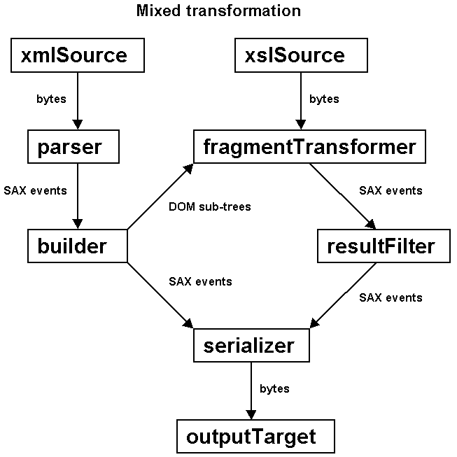

|
Devsphere.com |
|||||||||
| PREV CLASS NEXT CLASS | FRAMES NO FRAMES | |||||||||
| SUMMARY: NESTED | FIELD | CONSTR | METHOD | DETAIL: FIELD | CONSTR | METHOD | |||||||||
java.lang.Object
|
+--javax.xml.transform.Transformer
|
+--com.devsphere.xml.saxdomix.SDXTransformer
This class applies an XSLT transformation to each DOM sub-tree created during the mixed SAX-DOM parsing of an XML document.

SDXTransformer extends Transformer, which is
a TrAX abstract class introduced by JAXP 1.1. SDXTransformer
also implements the handleDOM() method of the
SDXController interface. The application must define
subclasses of SDXTransformer and implement the
wantDOM() method of SDXController.
All configuration methods defined by Transformer,
such as setOutputProperty() or setParameter()
delegate their task to another Transformer object called
fragmentTransformer. This object can be provided by the
application or can be constructed internally from any XSLT suitable
to transform the DOM sub-trees.
The transform() method creates three objects named
builder, serializer and resultFilter.
These objects are created internally and you don't have to use them
in a typical case. You may, however, override the methods that create them
in order to customize the transformation process.
After creating the three objects, transform() parses the
given xmlSource and feeds the builder
with the SAX input events.
The serializer will receive the SAX output events that
represent the result produced by SDXTransformer. The default
serializer is an identity TransformerHandler
that simply saves the SAX events to the given outputTarget,
which is an instance of the TrAX Result.
The role of the resultFilter object is to filter some of the
SAX events that are generated during the transforming of the DOM sub-trees.
For example, each transformation produces a startDocument()
and an endDocument(). The multiple such pairs should be
omitted from the result of the transformation. The SAX events that pass
through the filter will reach the serializer object.
The default builder is a SDXBuilderT that
receives the SAX events of the XML input source, uses the
serializer as handler and this SDXTransformer
as controller. The next paragraph explains the consequences.
The builder is initially in SAX parsing mode, which means
that SAX events are forwarded to the serializer object.
During the SAX parsing, the wantDOM() method of
this object is called for each element start. When wantDOM()
returns true, the builder constructs a DOM
sub-tree, which is then passed for handling to the handleDOM()
method of this object. During the DOM building, the wantDOM()
method is NOT called. The builder switches to the SAX parsing
mode automatically when the DOM sub-tree is completed. This process is
repeated until the end of the parsed document. All SAX events that aren't
used to build the sub-trees are passed to the serializer.
The handleDOM() method wraps each DOM sub-tree in a TrAX
DOMSource, wraps the resultFilter in a TrAX
SAXResult and passes these two TrAX objects to the
transform() method of the fragmentTransformer
object. This means that the XSLT transformation is applied to the DOM
sub-trees and the resulted SAX events are filtered before reaching
the serializer.
In conclusion, the SDXTransformer uses the framework's
SDXBuilderT to do mixed SAX-DOM parsing. By default,
all SAX events that aren't used to build DOM sub-trees will be part
of the final result. The DOM sub-trees are transformed using
a fragmentTransformer and the produced SAX events
will also be inserted into the final result.
Typical usage:
import com.devsphere.xml.saxdomix.SDXTransformer;
import org.xml.sax.Attributes;
import org.xml.sax.SAXException;
import javax.xml.transform.Transformer;
import javax.xml.transform.TransformerException;
import javax.xml.transform.stream.StreamSource;
import javax.xml.transform.stream.StreamResult;
public class MyTransformer extends SDXTransformer {
public MyTransformer(String xslSystemID)
throws TransformerException {
super(new StreamSource(xslSystemID));
}
public boolean wantDOM(String namespaceURI, String localName,
String qualifiedName, Attributes attributes)
throws SAXException {
return ... // application specific
}
public static void main(String args[]) {
Transformer transformer = new MyTransformer(args[0]);
transformer.setOutputProperties(...);
StreamSource source = new StreamSource(args[1]);
StreamResult result = new StreamResult(args[2]);
transformer.transform(source, result);
}
}
Warning: The developer must take into account that the XSLT stylesheet is used to transform DOM sub-trees / fragments. In some cases, applying the same stylesheet to the whole XML source document will produce a different result.
SDXBuilderT,
SDXController| Field Summary | |
protected org.xml.sax.ContentHandler |
builder
Builder used to do the mixed SAX-DOM parsing |
protected javax.xml.transform.Transformer |
fragmentTransformer
Object used to transform the DOM sub-trees |
protected org.xml.sax.ContentHandler |
resultFilter
Filter for the SAX events generated during the transforming of the DOM sub-trees |
protected javax.xml.transform.sax.TransformerHandler |
serializer
Serializer that receives the resulted SAX output events |
protected static javax.xml.transform.sax.SAXTransformerFactory |
traxFactory
Factory for Transformer and
TransformerHandler objects |
| Constructor Summary | |
SDXTransformer(javax.xml.transform.Source xslSource)
Creates a transformer that will use the given xslSource
to construct the fragmentTransformer. |
|
SDXTransformer(javax.xml.transform.Transformer fragmentTransformer)
Creates a transformer that will use the given fragmentTransformer for processing the DOM sub-trees. |
|
| Method Summary | |
void |
clearParameters()
Calls the method with the same name of the fragmentTransformer object
for clearing the parameter. |
protected org.xml.sax.ContentHandler |
createBuilder(javax.xml.transform.sax.TransformerHandler serializer)
Creates the builder object. |
protected org.xml.sax.ContentHandler |
createResultFilter(javax.xml.transform.sax.TransformerHandler serializer)
Creates the resultFilter object. |
protected javax.xml.transform.sax.TransformerHandler |
createSerializer(javax.xml.transform.Result outputTarget)
Creates the serializer object. |
javax.xml.transform.ErrorListener |
getErrorListener()
Calls the method with the same name of the fragmentTransformer object
for getting the error listener. |
java.util.Properties |
getOutputProperties()
Calls the method with the same name of the fragmentTransformer object
for getting the output properties. |
java.lang.String |
getOutputProperty(java.lang.String name)
Calls the method with the same name of the fragmentTransformer object
for getting an output property. |
java.lang.Object |
getParameter(java.lang.String name)
Calls the method with the same name of the fragmentTransformer object
for getting the value of a parameter. |
javax.xml.transform.URIResolver |
getURIResolver()
Calls the method with the same name of the fragmentTransformer object
for getting the URI resolver. |
void |
handleDOM(org.w3c.dom.Element element)
Receives the DOM sub-trees for transforming. |
void |
setErrorListener(javax.xml.transform.ErrorListener listener)
Calls the method with the same name of the fragmentTransformer object
for setting the error listener. |
void |
setOutputProperties(java.util.Properties oformat)
Calls the method with the same name of the fragmentTransformer object
for setting the output properties. |
void |
setOutputProperty(java.lang.String name,
java.lang.String value)
Calls the method with the same name of the fragmentTransformer object
for setting an output property. |
void |
setParameter(java.lang.String name,
java.lang.Object value)
Calls the method with the same name of the fragmentTransformer object
for setting the value of a parameter. |
void |
setURIResolver(javax.xml.transform.URIResolver resolver)
Calls the method with the same name of the fragmentTransformer object
for setting the URI resolver. |
void |
transform(javax.xml.transform.Source xmlSource,
javax.xml.transform.Result outputTarget)
Process the source tree to the output result. |
abstract boolean |
wantDOM(java.lang.String namespaceURI,
java.lang.String localName,
java.lang.String qualifiedName,
org.xml.sax.Attributes attributes)
The application must implement this method and returns true when a DOM sub-tree should be transformed
by fragmentTransformer. |
| Methods inherited from class java.lang.Object |
clone, equals, finalize, getClass, hashCode, notify, notifyAll, toString, wait, wait, wait |
| Field Detail |
protected static javax.xml.transform.sax.SAXTransformerFactory traxFactory
Transformer and
TransformerHandler objects
protected javax.xml.transform.Transformer fragmentTransformer
protected org.xml.sax.ContentHandler builder
protected javax.xml.transform.sax.TransformerHandler serializer
protected org.xml.sax.ContentHandler resultFilter
| Constructor Detail |
public SDXTransformer(javax.xml.transform.Transformer fragmentTransformer)
fragmentTransformer for processing the DOM sub-trees.
fragmentTransformer - The transformer for the DOM sub-trees
java.lang.NullPointerException - If the parameter is null
public SDXTransformer(javax.xml.transform.Source xslSource)
throws javax.xml.transform.TransformerException
xslSource
to construct the fragmentTransformer.
xslSource - The stylesheet for the DOM sub-trees
java.lang.NullPointerException - If the parameter is null
javax.xml.transform.TransformerException| Method Detail |
public abstract boolean wantDOM(java.lang.String namespaceURI,
java.lang.String localName,
java.lang.String qualifiedName,
org.xml.sax.Attributes attributes)
throws org.xml.sax.SAXException
true when a DOM sub-tree should be transformed
by fragmentTransformer.
During the SAX parsing, the builder object invokes
the wantDOM() method for each startElement()
parsing event. If wantDOM() returns false
the SAX parsing mode continues. When wantDOM() returns
true the builder enters in DOM parsing mode
and starts creating a DOM sub-tree from all SAX events between the
current startElement() and the corresponding
endElement().
wantDOM in interface SDXControllernamespaceURI - The element's namespace URIlocalName - The element's local namequalifiedName - The element's qualified nameattributes - The element's attributes
builder must enter
in DOM parsing mode or must remain
in SAX parsing mode
org.xml.sax.SAXException - If an error must be signaled
public void handleDOM(org.w3c.dom.Element element)
throws org.xml.sax.SAXException
After wantDOM() returns true,
the builder constructs a DOM sub-tree from SAX events
and passes it to the handleDOM() method.
The handleDOM() method wraps the given DOM sub-tree
in a TrAX DOMSource, wraps the resultFilter
in a TrAX SAXResult and passes these two TrAX objects to the
transform() method of the fragmentTransformer
object.
After the DOM sub-tree is transformed, the builder
returns to the SAX parsing mode.
handleDOM in interface SDXControllerelement - The root of the DOM sub-tree
org.xml.sax.SAXException - If an error must be signaled
protected javax.xml.transform.sax.TransformerHandler createSerializer(javax.xml.transform.Result outputTarget)
throws javax.xml.transform.TransformerException
serializer object. Its role is to receive
the SAX output events that represent the result produced by this
SDXTransformer.
The serializer created by the current implementation
is an identity TransformerHandler that simply saves
the SAX events to the given outputTarget.
Subclasses may override this method for replacing the default
serializer.
outputTarget - The Result instance passed by the
application to the transform()
method
serializer
javax.xml.transform.TransformerException - If an error must be signaled
protected org.xml.sax.ContentHandler createResultFilter(javax.xml.transform.sax.TransformerHandler serializer)
throws javax.xml.transform.TransformerException
resultFilter object. Its role is to filter some
of the SAX events that are generated during the transforming of the DOM
sub-trees. For example, each transformation produces
a startDocument() and an endDocument().
The multiple such pairs should be omitted from the result of the
transformation. The SAX events that pass through the filter should reach
the serializer object.
The current implementation returns an instance of the
com.devsphere.xml.saxdomix.helpers.ResultFilter class.
Subclasses may override this method for replacing the default
resultFilter.
serializer - The current serializer object
resultFilter
javax.xml.transform.TransformerException - If an error must be signaled
protected org.xml.sax.ContentHandler createBuilder(javax.xml.transform.sax.TransformerHandler serializer)
throws javax.xml.transform.TransformerException
builder object. Its role is to receive the SAX
input events of the xmlSource that is passed to the
transform() method. The builder is expected to
act like a SDXBuilderT and forward the DOM sub-trees to the
handleDOM() method of this SDXTransformer
when wantDOM() returns true.
The current implementation returns a SDXBuilderT that
uses the serializer object as handler and this
SDXTransformer as controller.
Subclasses may override this method for replacing the default
builder. Instead of using the serializer
object, the application may provide its own handler for the SAX events
that don't participate to the construction of the DOM sub-trees.
In this case, the application's handler should still forward the
startDocument() and endDocument() events
to the serializer. The handler could act as a SAX filter
retaining some of the SAX events and transforming the others before
forwarding them to the serializer object.
Note that this should always be the
SDXController of the builder.
serializer - The current serializer object
builder
javax.xml.transform.TransformerException - If an error must be signaled
public void transform(javax.xml.transform.Source xmlSource,
javax.xml.transform.Result outputTarget)
throws javax.xml.transform.TransformerException
The transform() method creates the three objects
named builder, serializer and
resultFilter. After this, transform() parses
the given xmlSource and feeds the builder
with the SAX input events.
transform in class javax.xml.transform.TransformerxmlSource - The input source for the transformationoutputTarget - The output target for the transformation
javax.xml.transform.TransformerException - If an error must be signaled
public void setParameter(java.lang.String name,
java.lang.Object value)
fragmentTransformer object
for setting the value of a parameter.
setParameter in class javax.xml.transform.Transformername - The name of the parametervalue - The value for the parameterpublic java.lang.Object getParameter(java.lang.String name)
fragmentTransformer object
for getting the value of a parameter.
getParameter in class javax.xml.transform.Transformername - The name of the parameter
public void clearParameters()
fragmentTransformer object
for clearing the parameter.
clearParameters in class javax.xml.transform.Transformerpublic void setURIResolver(javax.xml.transform.URIResolver resolver)
fragmentTransformer object
for setting the URI resolver.
setURIResolver in class javax.xml.transform.Transformerresolver - An object whose class implements
the TrAX URIResolver interfacepublic javax.xml.transform.URIResolver getURIResolver()
fragmentTransformer object
for getting the URI resolver.
getURIResolver in class javax.xml.transform.TransformerURIResolver interface
public void setOutputProperties(java.util.Properties oformat)
throws java.lang.IllegalArgumentException
fragmentTransformer object
for setting the output properties.
setOutputProperties in class javax.xml.transform.Transformeroformat - The new output properties
java.lang.IllegalArgumentException - If the argument is invalidpublic java.util.Properties getOutputProperties()
fragmentTransformer object
for getting the output properties.
getOutputProperties in class javax.xml.transform.Transformer
public void setOutputProperty(java.lang.String name,
java.lang.String value)
throws java.lang.IllegalArgumentException
fragmentTransformer object
for setting an output property.
setOutputProperty in class javax.xml.transform.Transformername - The name of the propertyvalue - The value for the property
java.lang.IllegalArgumentException - If the arguments are invalid
public java.lang.String getOutputProperty(java.lang.String name)
throws java.lang.IllegalArgumentException
fragmentTransformer object
for getting an output property.
getOutputProperty in class javax.xml.transform.Transformername - The name of the property
java.lang.IllegalArgumentException - If the argument is invalid
public void setErrorListener(javax.xml.transform.ErrorListener listener)
throws java.lang.IllegalArgumentException
fragmentTransformer object
for setting the error listener.
setErrorListener in class javax.xml.transform.Transformerlistener - An object whose class implements
the TrAX ErrorListener interface
java.lang.IllegalArgumentExceptionpublic javax.xml.transform.ErrorListener getErrorListener()
fragmentTransformer object
for getting the error listener.
getErrorListener in class javax.xml.transform.TransformerErrorListener interface
|
Devsphere.com |
|||||||||
| PREV CLASS NEXT CLASS | FRAMES NO FRAMES | |||||||||
| SUMMARY: NESTED | FIELD | CONSTR | METHOD | DETAIL: FIELD | CONSTR | METHOD | |||||||||